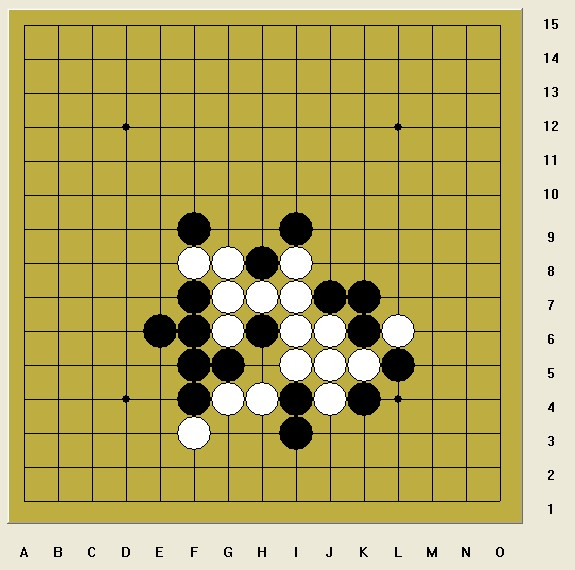

又是星期六再来一题地毯地毯
首页
妖刀天下
#1 又是星期六再来一题地毯地毯 作者：日月丽天 发表时间：2014-4-19 9:48:23

有兴趣着地毯地毯，黑先，要求黑必胜地毯，地毯者有嘉奖！
#2 Re:又是星期六再来一题地毯地毯 作者：梧桐风 发表时间：2014-4-19 22:20:42
没手顺的题都是耍流氓
#3 Re:又是星期六再来一题地毯地毯 作者：日月丽天 发表时间：2014-4-20 8:52:04
就是道题，没有手序，反正也不影响解题，可以自然的看黑白分别有几个2，几个眠三相互优势，不受干扰。
#4 Re:又是星期六再来一题地毯地毯 作者：虎哥 发表时间：2014-4-21 10:41:05
没手顺就没动力啊
#5 Re:又是星期六再来一题地毯地毯 作者：日月丽天 发表时间：2014-4-21 11:41:26